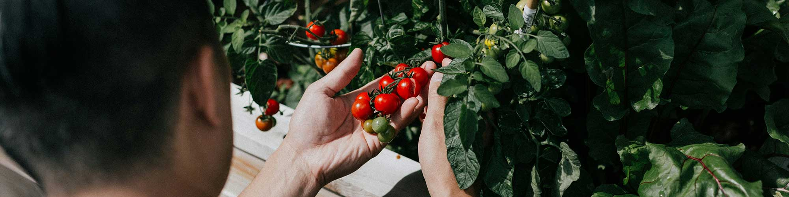
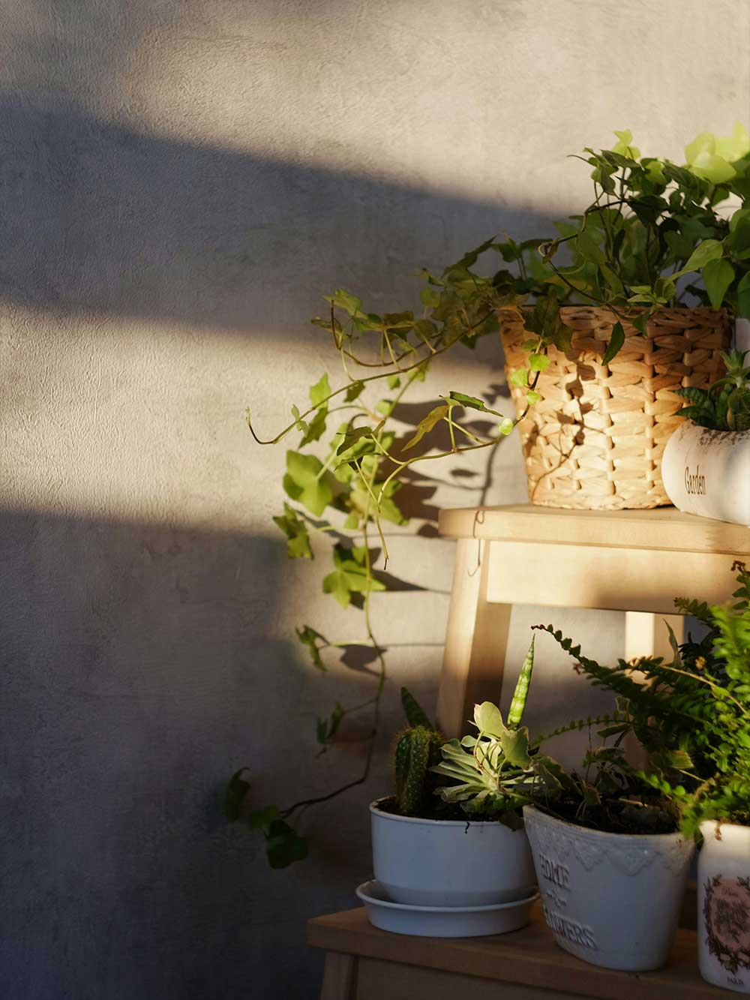
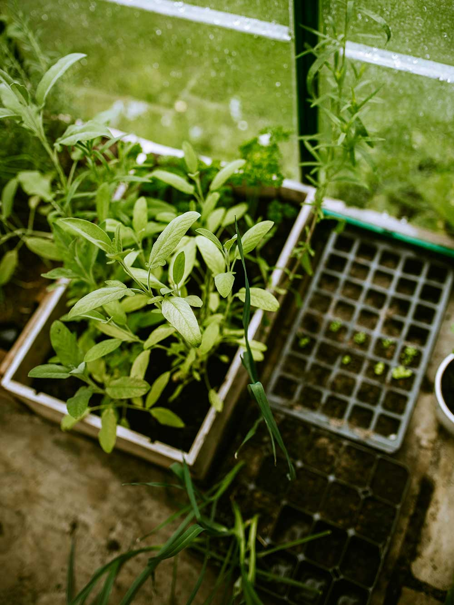
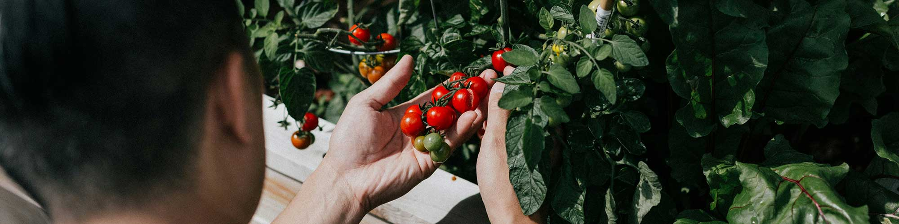
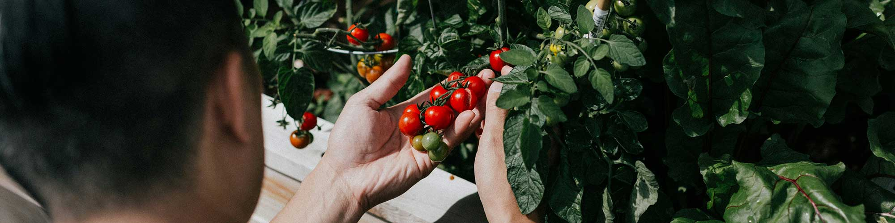

Green Bin Gardening Shop
About Us
Blogs
Contact Us

You can have a green thumb!
We have everything you need to start gardening!
Shop...
Plants
Fertilizer
Tools
Pots


The outdoors not your style?
We have indoor plants too!
Shop...
Plants
Fertilizer
Tools
Pots

 
